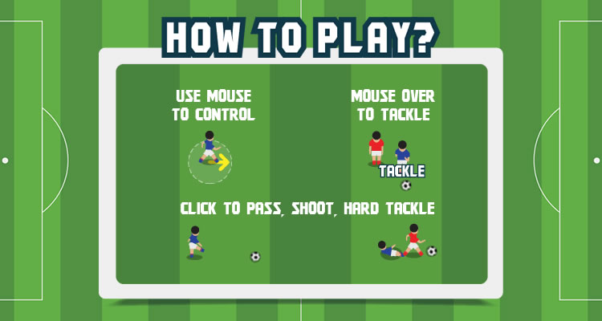
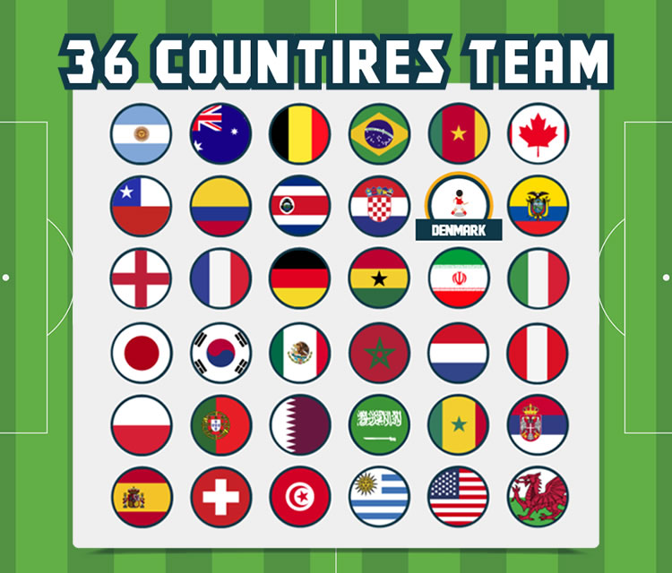
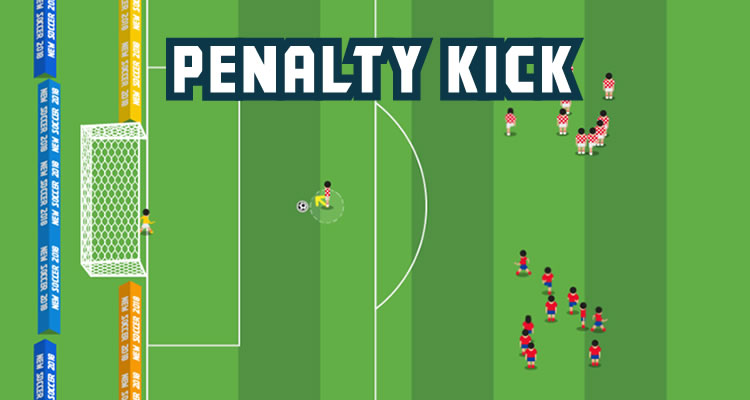
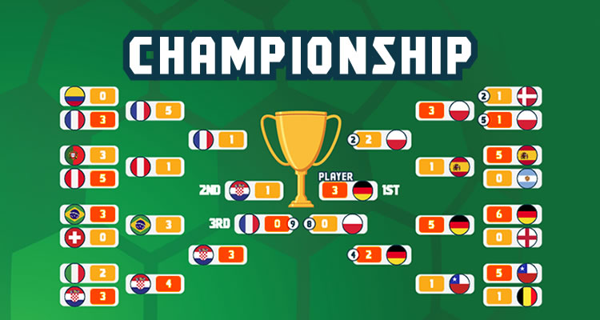

“New Soccer” Documentation by “demonisblack” v2.5
“New Soccer”
Created: 4/23/2022
By: mannygonzalez
Thank you for purchasing my game. If you have any questions that are beyond the scope of this help file, please feel free to email via my user page contact form here. Thanks so much!
Table of Contents
- Introduction
- Getting Started
- HTML Structure
- CSS Files and Structure
- JavaScript
- Game Functions
- Game Assets
- Compatibility
- Add-ons
- Sources and Credits
- Changelog
- Support Policy
A) Introduction - top
New Soccer is a HTML5 soccer game played between two teams of eleven players, using mouse control only one player and score by getting the ball into the opposing goal.
The ZIP package contains the game with 1280×768 resolution that scales to fit the whole screen device, but it may not be perfectly full screen.
How To Play:
1) Use mouse to control player
2) Mouseover opponent for tackle
3) Click to pass, shoot or hard tackle




B) Getting Started - top
To install the game just upload folder 'game' to your server. The game won't run locally with some browser like Chrome due to some security mode.
You need a website that runs PHP to make facebook share button work, and make sure to change Facebook Open Graph meta and Twitter meta in index.html, just replace [GAME_URL] to your game URL.
<!-- for Facebook -->
<meta property="og:image" content="[GAME_URL]/share.jpg" />
<meta property="og:url" content="[GAME_URL]" />
<!-- for Twitter -->
<meta name="twitter:image" content="[GAME_URL]/share.jpg" />
You can easily customize game text and settings in game.js file
var soccerGameTime = 180000; //game total time
var gameStartSide = 'home'; //game start side (home / away)
var playerSpeed = {user:2.6, //user speed
playerTeam:{player:2.5, goalkeeper:2.5}, //user player team speed
oppositeTeam:{player:2.55, goalkeeper:2.6}, //opposite player team speed
tackle:5}; //tackle speed
//control settings
var controlSettings = {
screenControl:false, // true to use screen control for desktop, false for using mouse to move
screenMobileControl:true, // true to use screen control for mobile, false for using touch to move
screenControlSide:true, //true for right, false for left
screenControlAlpha:.6
};
//result title
var resultWinText = 'CONGRATULATION!\nYOU WON THE MATCH!';
var resultDrawText = 'YOU HAVE DRAW\nTHE MATCH!';
var resultLossText = 'BETTER LUCK\nNEXT TIME!';
//Social share, [SCORE] will replace with game score
var shareEnable = true; //toggle share
var shareText = 'SHARE THIS GAME'; //social share message
var shareTitle = 'My final score on New Soccer Game is Blu [LEFTSCORE] VS [RIGHTSCORE] Red.';//social share score title
var shareMessage = 'Blu [LEFTSCORE] VS [RIGHTSCORE] Red is mine new score on New Soccer Game! Try it now!'; //social share score message
Teams:
You can easily customize 16 teams in array below in team.js file
//team array
var team_arr = [{
name:'GERMANY',
icon:'assets/team/icon_germany.png',
bracket:'assets/team/icon_bracket_germany.png',
player:'assets/team/players_germany.png'
}];
- name - team name
- icon - icon image path
- bracket - bracket image path
- player - player spritesheet path
Soccer field wall:
You can easily customize wall bounce back in array below in player.js file
//wall position
var wallData = [{x:239, y:1181, w:1824, h:10, pos:'bottom'}];
- x - x start position
- y - y start position
- w - wall width
- h - wall height
- pos - wall position (top, bottom, left, right), eg top position will bounce back to bottom way
Soccer field area:
You can easily customize shoot area in array below in player.js file
//area positions
var areaData = [{x:175, y:568, w:62, h:165, pos:'postarea', side:'right'}];
- x - x start position
- y - y start position
- w - wall width
- h - wall height
- pos - area position (postarea, shotarea); postarea is goal area; shotarea is where player begin to shoot the ball into the goal
- side - for which team (left / right)
Player positions:
You can easily customize player position in array below in player.js file
//players position
var playerPos = [{x:875, y: 561, side:'left', pos:'forward', patrolStartX:583, patrolEndX:2050}];
- x - x start position
- y - y start position
- side - player as which team (left / right)
- pos - player position (back, midfield, forward)
- patrolStartX - start patrol position x
- patrolEndX - end patrol position x
Goalkeeper positions:
You can easily customize goalkeeper position in array below in player.js file
//goalkeeper positions
var playerGoalPos = [{x:286, y: 635, side:'left', patrolStartX:238, patrolEndX:482, patrolStartY:504, patrolEndY:788}];
- x - x start position
- y - y start position
- side - player as which team (left / right)
- patrolStartX - start patrol position x
- patrolEndX - end patrol position x
- patrolStartY - start patrol position y
- patrolEndY - end patrol position y
Kickoff positions:
You can easily customize kickoff position in array below in player.js file
//player forward start ball position
var playerForwardPos = [{x:1120, y:620, side:'left'}];
- x - x start position
- y - y start position
- side - player as which team (left / right)
Penalty datas:
You can easily customize penalty gameplay data in array below in player.js file
var playerPenaltyData = {ballX:430,
ballY:650,
playerX:460,
playerY:650,
goalkeeprX:286,
goalkeeprY:635,
patrolStartX:238,
patrolEndX:344,
patrolStartY:504,
patrolEndY:788,
goalkeeprIdleX:1500,
goalkeeprIdleY:830,
homeX:750,
homeY:550,
awayX:750,
awayY:800,
scoreColor:'#00D900',
missColor:'#D90000',
bgColor:'#000'
};
- ballX - ball position x
- ballY - ball position y
- playerX - player position x
- playerY - player position y
- goalkeeprX - goalkeeper position x
- goalkeeprY - goalkeeper position y
- patrolStartX - goalkeeper patrol start x
- patrolEndX - goalkeeper patrol end x
- patrolStartY - goalkeeper patrol start y
- patrolEndY - goalkeeper patrol end y
- goalkeeprIdleX - goalkeeper idle x
- goalkeeprIdleY - goalkeeper idle y
- homeX - home player position x
- homeY - home player position y
- awayX - away player position x
- awayY - away player position y
- scoreColor - score color
- missColor - miss color
- bgColor - bg color
Championship settings:
You can easily customize championship settings in championship.js file
//championship placement name
var championshipPlace = ['1st','2nd','3rd'];
And you can easily customize championship brackets in array below in championship.js file
//championship brackets position
var championshipBracket_arr = {roundof16:[
{
homeX:204,
homeY:200,
awayX:204,
awayY:249,
homeS:'left',
awayS:'left',
homeP:'up',
awayP:'down'
}
]}
- roundof16 - there are total 4 rounds of array (roundof16, quaterfinals, semifinals, finals)
- homeX - home bracket position x
- homeY - home bracket position y
- awayX - away bracket position x
- awayY - away bracket position y
- homeS - home bracket direction (left / right)
- awayS - away bracket direction (left / right)
- homeP - player indicator position for home (up / down)
- awayP - player indicator position for away (up / down)
The sound can be easily disabled to avoid compatibility issues in sound.js file:
var enableDesktopSound = true; //sound for dekstop
var enableMobileSound = true; //sound for mobile and tablet
The mobile rotate instruction can be easily change in mobile.js file:
var rotateInstruction = true; //enable rotate instruction for mobile
var forPortrait=false; //for portrait only, set false for landscape mode
C) HTML Structure - top
The page start with the loader wrapper that covering the whole screen in the body. It shows loader progress when calls the function initPreload()
<!-- PERCENT LOADER START-->
<div id="mainLoader"><img src="assets/loader.png" /><br><span>0</span></div>
<!-- PERCENT LOADER END-->
This section is for browser not support page when calls the function checkBrowser(). It shows error message when detect the browser does not support canvas.
<!-- BROWSER NOT SUPPORT START-->
<div id="notSupportHolder">
<div class="notSupport">YOUR BROWSER ISN'T SUPPORTED.<br/>PLEASE UPDATE YOUR BROWSER IN ORDER TO RUN THE GAME</div>
</div>
<!-- BROWSER NOT SUPPORT END-->
Device rotate instruction page when calls the function checkMobileOrientation(). It shows rotate instruction when device is in portrait view.
<!-- ROTATE INSTRUCTION START-->
<div id="rotateHolder">
<div class="mobileRotate">
<div class="rotateImg"><img src="assets/rotate.png" /></div>
<div class="rotateDesc">ROTATE YOUR DEVICE <br/>TO LANDSCAPE</div>
</div>
</div>
<!-- ROTATE INSTRUCTION END-->
Follow by one canvas tag in the body. The game start initiatie by calls the main function of the game initMain().
<!-- CANVAS START-->
<div id="canvasHolder">
<canvas id="gameCanvas" width="1280" height="768"></canvas>
</div>
<!-- CANVAS END-->
D) CSS Files and Structure - top
I'm using two CSS files in this game. The first one is a generic reset file. Many browser interpret the default behavior of html elements differently. By using a general reset CSS file, we can work round this. This file also contains some general styling, such as anchor tag colors, font-sizes, etc. Keep in mind, that these values might be overridden somewhere else in the file.
The second file contains all of the specific stylings for the page.
E) JavaScript - top
This game using Javascript files below.
-
jQuery is a cross-platform JavaScript library designed to simplify the client-side scripting of HTML.
-
Detect Mobile Browser is a open source scripts to detect mobile browsers and phones.
-
CreateJs plugin is a suite of modular libraries and tools which work together to create interactive content on open web technologies via HTML5.
-
TweenMax is an extremely fast, lightweight, and flexible animation tool that serves as the foundation of the GreenSock Animation Platform (GSAP).
-
The game have the following js files
- init.js : check if browser or device support
- loader.js : loader to load all game images
- main.js : initiate game setup and browser resize function
- mobile.js : mobile orientation change
- canvas.js : canvas setup and resize
- sound.js : sound event
- team.js : team settings
- game.js : game play and logics
- player.js : soccer and players logics
- func.js : additional soccer funcs
- plugins.js : additonal useful plugins
- init.js : check if browser or device support
Complete game flow:
- The index.html file start init.js for browser detection
- If browser is supported, init loader.js to start load asserts with loading progress
- For mobile the rotate instruction shows when device is in portrait view, detect by mobile.js
- When all asserts contained in "/assets" folder are loaded, the game start construct canvas.js and main.js from game.js thats shows game menu
- If user click start button in game menu, the game will start instruction with game.js
- If user click ok button in instruction page, the game will start game with player.js
- If user move the cursor, the player will follow the cursor
- When user are carrying the ball, click to pass or shoot the ball.
- When user team are carrying the ball, click to pass the ball to user.
- When opponent are carrying the ball, mouseover to tackle or click for hard tackle.
- When the ball went into the goal area, team will score 1 point and game start over with kickoff.
- When game time is over, the game end and go to game result.
- If user click continue button at game result, it will go to menu page
F) Game Functions - top
The most important functions used for page.
-
checkBrowser()
This function is runs for browser detection
-
checkMobileEvent()
This function runs for mobile event
The most important functions used for game.
-
initMain()
This function build canvas
-
startGame()
This function start gameplay
-
stopGame()
This function stop gameplay
-
saveGame()
This function save game score
H) Game Assets - top
The game contain 'design' folder which include following:
- newsoccer_1280x768.psd - with layer folders below
- Option
- Result
- Game
- Landing
- Background
The folder 'assets' in 'game' folder contains all the images of the game that can be replaced. Is better to have the same size of the old ones if you want to reskin the game graphic without coding.
I) Compatibility - top
This game is build for Desktop browsers that support HTML5 canvas. Any mobile/tablet should work in landscape view, but they are not officially supported.
J) Add-ons - top
The add-ons is an additional feature added to the game, below are the add-ons that are compatible with this game:

This game is compatible with Scoreboard for HTML5 Games, it is a add-ons page where user can submit score and view top 10 leaderboard. You can get it here.
K) Sources and Credits - top
I've used the following font and sound files as listed.
- Kroftsmann from file Abdulmakesfonts
- referee-whistle.wav from file Pablo-F
- Norwegian football match/soccer game ambience.WAV from file habbis92
- Barça goal 04-2006.mp3 from file jordiroquer
- Football-crowd-Cheer+Jeers.wav from file paulw2k
- Soccer Kick.wav from file musita182
- Notification: Bumptious from file mickleness
- Extra01 from file Lee I. Garnett
- Extra02 from file Lee I. Garnett
L) Changelog - top
Version 2.5- Total 32 teams
- Improved ball animation
- Improved UI
- Added championship options
- Updated sound function
- Added music button
- Added on screen control
- Fixed scoreboard issue
- Add-on script integrated
- Update Google to Whatsapp share
- Added computer vs computer option
- Fixed continue button not showing
- Fixed championsip next round penalty
- Fixed save score
- Fixed audio not playing in Chrome browser
- Fixed championsip penalty score
- Fixed championship bracket highlight
- Fixed result score text
- Added championship
- Fixed team select issue when return main menu
- Fixed penalty kick issue
- Added gameplay selection
- Added home or away selection
- Added penalty kick (single, quickmatch)
- Added team selection
- Added 16 country team
- Added match statistics
- Fixed player not moving
- Fixed goalkeepers issue
- Fixed control issue after rematch
M) Support Policy - top
Check out support policy here.
Wordpress Site
By using Scoreboard for HTML5 Games plugin, you can embed HTML5 game into WordPress post or page.
> Plugin
Help simulate ads on HTML5 Games, you can integrate and display static and takeover ads through different Ads Serving Platform.
> Documentation
Guide you through integrating Facebook Instant Games API in our HTML5 Games.
> Documentation
Once again, thank you so much for purchasing this game, if you have a more general question relating to the games on CodeCanyon, you might consider visiting the item page in the "Support" section.

How to rate an item on CodeCanyon?
Use the steps below to rate our items on CodeCanyon:- Login to CodeCanyon
- Open the menu on the top right, and click onto the link “Downloads” which shows a list of your downloads
- Rate our items using the stars
- That’s it. Thank you very much!
demonisblack